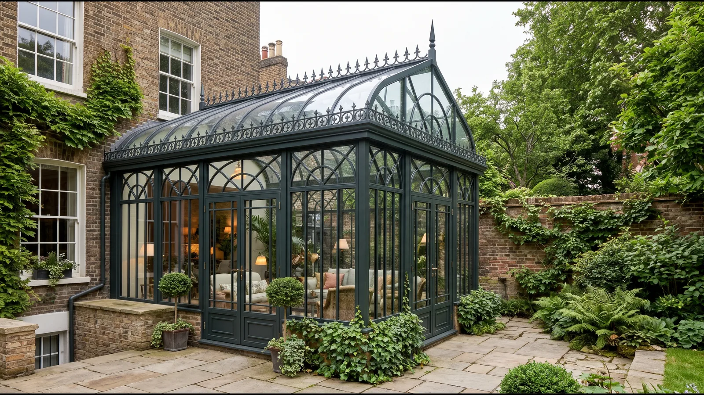

Planning Permission for Heritage Conservatories in London Conservation Areas
Adding a bespoke metal-and-glass conservatory to a period property in London requires careful navigation of local planning policies. While many standard rear extensions fall under Permitted Development rights, properties located within designated Conservation Areas—such as Kensington, Chelsea, Westminster, Hampstead, or Richmond—or those holding Listed Building status are subject to stricter architectural scrutiny.
Read the guide ↗